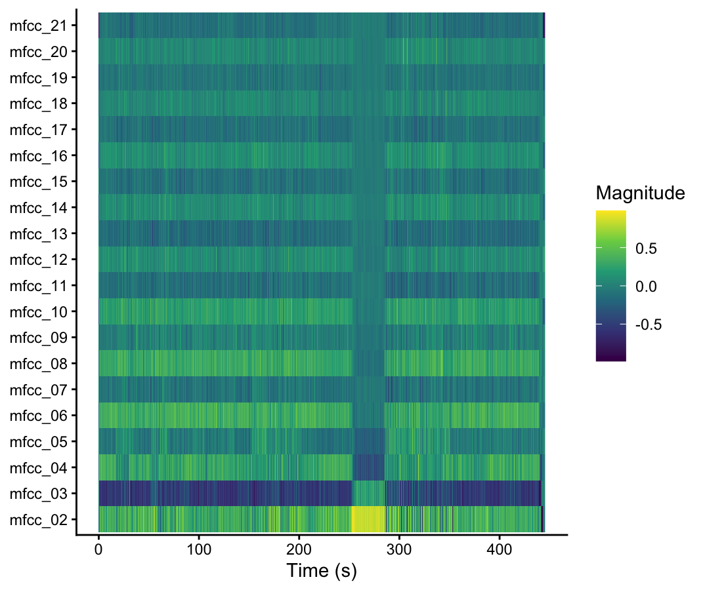
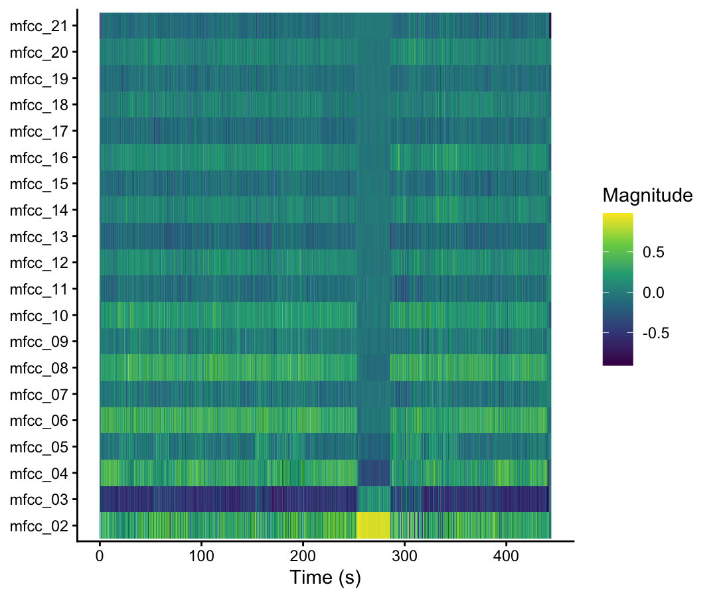
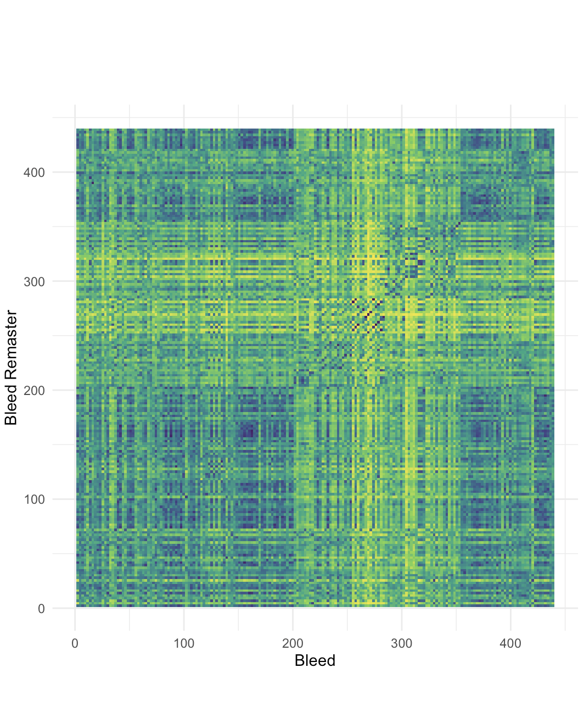
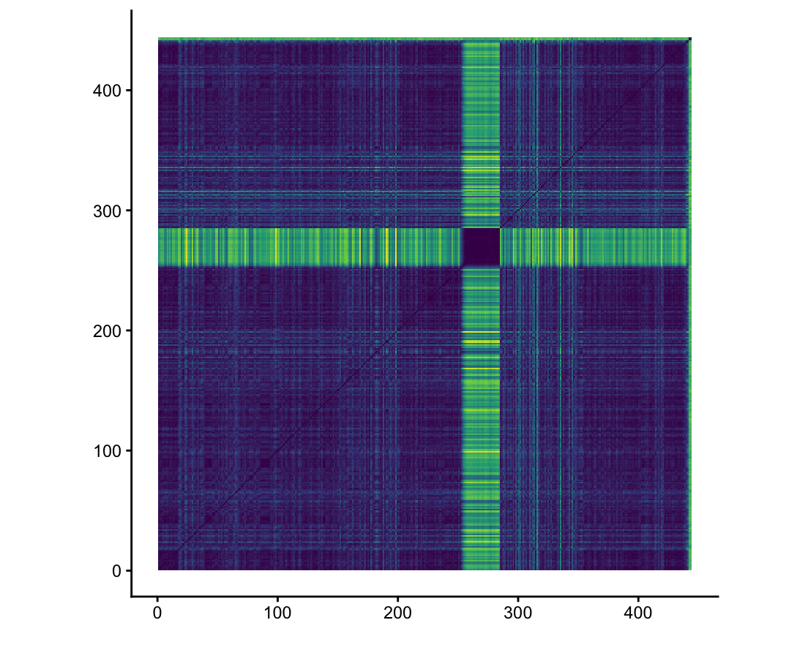
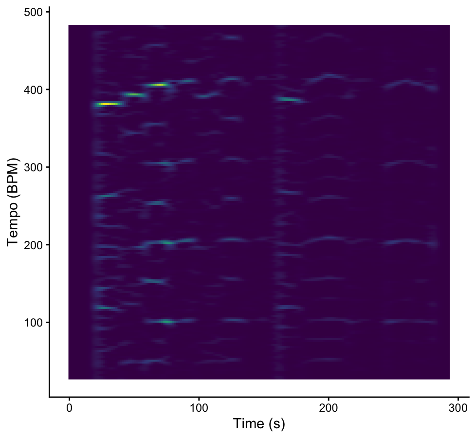
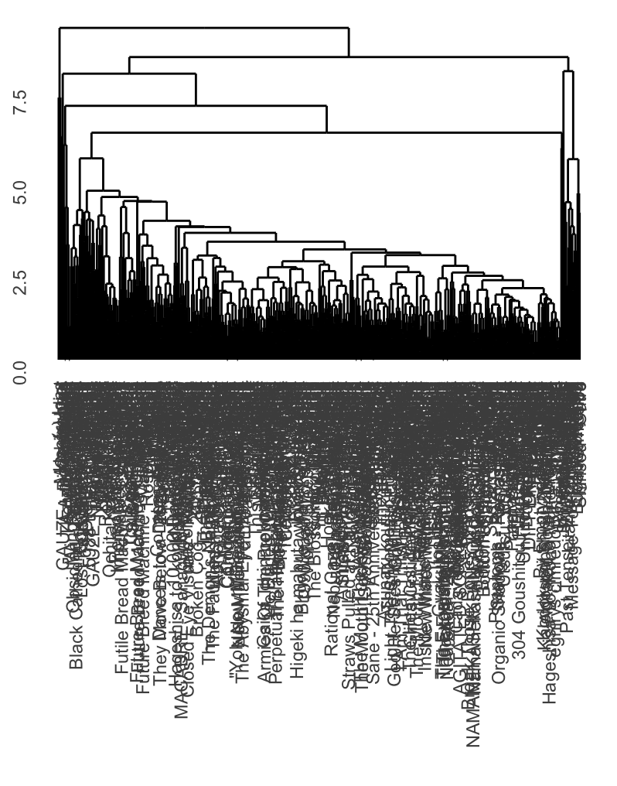
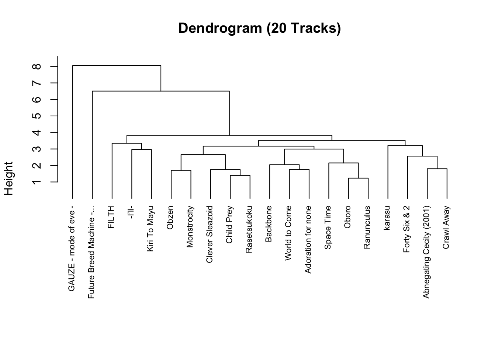
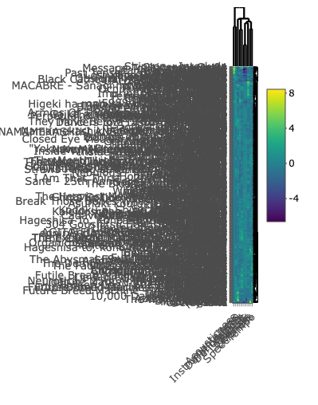
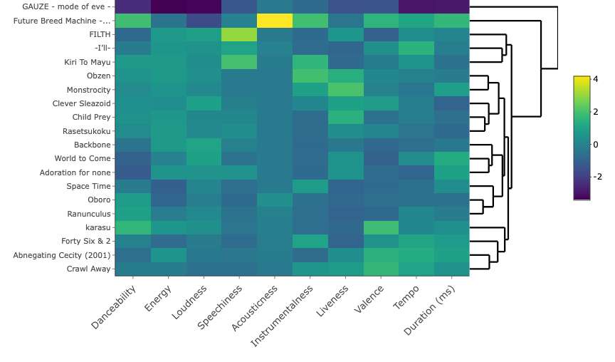

As you can see, the cepstrogram for the 2008 original recording of Bleed by Meshuggah has a long instrumental section that ends just before the 300 second mark, causing a visible difference in timbre on the cepstrogram. This instrumental section uses less distortion than other areas within the piece and has a much softer sound, which comes across as extreme when contrasted with the high-distortion, intense guitar and percussion through the rest of the piece.
This cepstrogram for the 2023 remaster of Bleed by Meshuggah is very similar to the cepstrogram of the original recording, though measurement of timbre in the instrumental section before the 300 second mark appears slightly more extreme here, highlighting an increase in the difference of timbre with the 2023 version’s mixing. Both this and the previous cepstrogram use Euclidean normalisation rather than Manhattan or Chebyshev, as those methods of normalisation, I found, provided the best visual display of variance in timbre.

The chromagram I’ve done for this assignment compares the 2008 original release of the song Bleed by Swedish progressive metal band Meshuggah with the band’s 15th anniversary remaster of the same song, released on the remastered version of the album Obzen in 2023. Here, we can see the 2023 version (displayed on the y axis) and the original 2008 version (displayed on the x axis) of Bleed are similar, though the exact mixing and timing differs somewhat. The black diagonal line can be viewed, starting at about 250 seconds, shows similarity in both chromagrams, displaying points in time where the remaster did not differ from the original. Euclidean normalisation was used for this chromagraph comparison.

I’ve also provided a self-similarity matrix for the 2023 remaster of Bleed, where the difference in timbre during the instrumental section is even more visible.
As you can see, this novelty function has a period of almost 30 seconds where no tempo is detected at all. Intolerance by TOOL begins with a long period of near silence before picking up at around 21 seconds, which explains why the visualisation did not have any data to depict before that point.
Here is an adjusted novelty function beginning at 20 seconds and ending at 50 seconds into the track, instead of the previous one, that covered the period of the first 30 seconds. After this, the tempo seems much more regular… at a glance. Complications arise later in the track, as the meter undergoes changes from 4/4 to 3/4 and then back again. It’ll be easier to explain what I mean with the DFT tempogram.

Here, we can see evidence of a meter change at about 175 seconds, which happens during an instrumental bridge. Meter changes and tempo changes are very common among the progressive metal genre (of which Intolerance is an early example), but can be somewhat problematic for visualisations of tempo that often rely on a standard, stable meter.


As you can see, this first dendrogram is completely illegible due to the high number of data points, although the clustering is still clearly visible. I’ve created a second dendrogram with 20 randomly selected tracks from the corpus to better display how the specific tracks are clustered.
This second dendrogram does a much better job displaying how the songs are clustered within the dataset, though it utilises a much smaller sample than the original (only 20 tracks, versus the entire corpus, which contains 515 tracks). This shows clearer clustering of tracks by Dir En Grey when compared to other progressive metal bands’ tracks.


This first heatmap suffers from the same problem as the first dendrogram - too much text, not enough spacing. I’ve used the same solution (a 20-track sample of the corpus, rather than a display of the corpus in its entirety) for the second heatmap.
This second heatmap is much more legible, and here we can begin to see clear differences between tracks in the corpus. The Acousticness category shows the least variation, with one notable highly acoustic exception being Future Breed Machine by Meshuggah. Additionally, Gauze - mode of eve, the final track to Dir En Grey’s 1999 album GAUZE, is an outlier in nearly every respect, though most notably for its track length. While most tracks across this corpus range from 1 to 15 minutes, Gauze - mode of eve is only 4 seconds long.